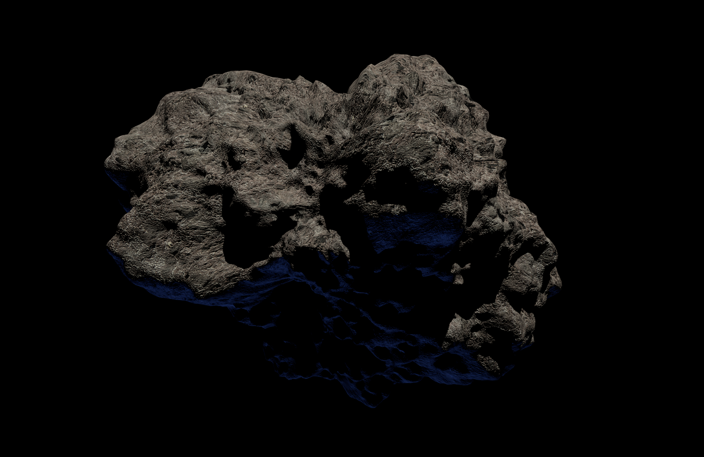
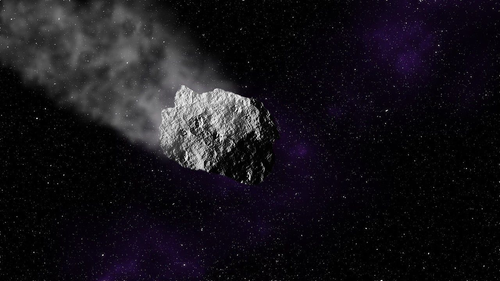
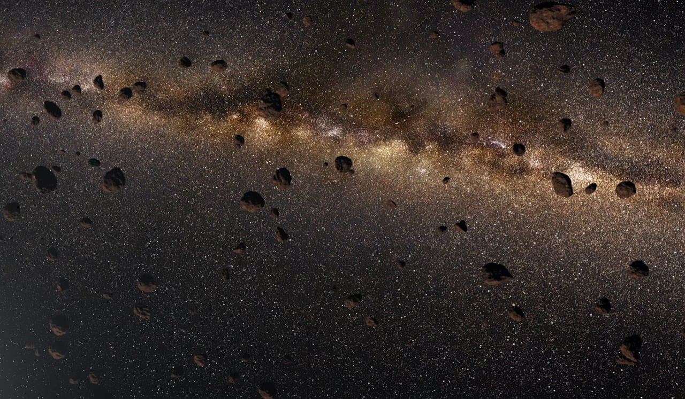

流星
太空中充滿了塵埃粒子和固體碎片，這些微小的物質有時會被地球的引力吸引，並以每秒數十公里的速度進入大氣層。當這些物體與大氣摩擦時，它們會燃燒並發光，這就是我們所見的流星。
流星有兩種形式：
一種是出現時間和位置不定的單個流星，另一種是成群結隊、有固定軌跡的流星群。
流星雨的形成與彗星有關。彗星在接近太陽時，冰塊和塵埃會脫落，沿著彗星的軌道散布在太空中。地球每年繞太陽公轉時，會穿過這些彗星遺留的塵埃雲，這些顆粒進入大氣層並燃燒，形成流星。當地球穿越像這樣的一大團的塵埃時，就會出現壯觀的流星雨。